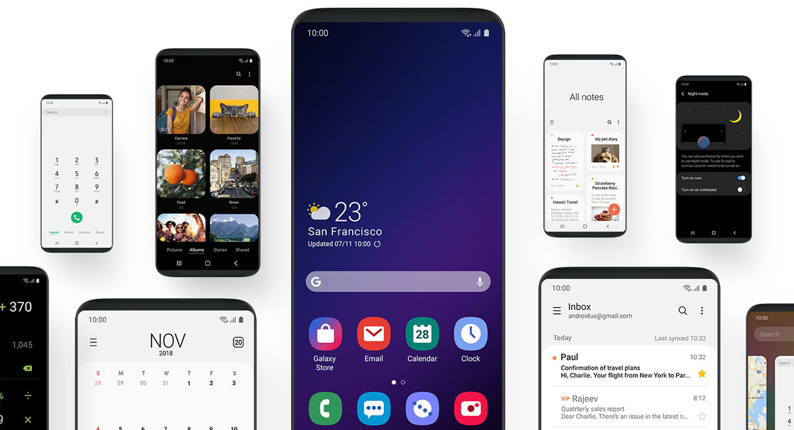
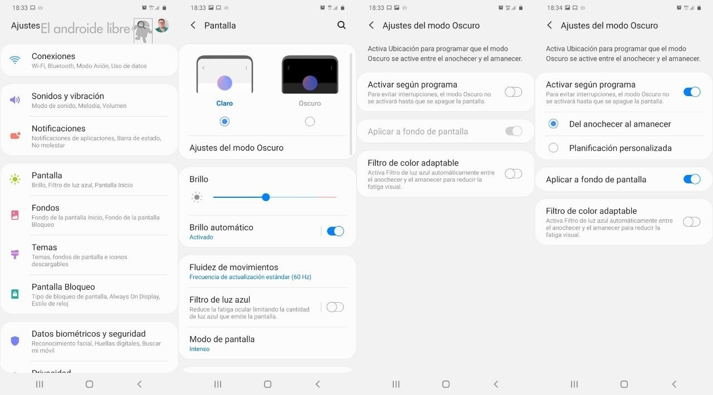

OneUI es una interfaz de usuario personalizada desarrollada por Samsung para sus dispositivos Android. Está diseñada para proporcionar una experiencia de usuario consistente e intuitiva en todos los dispositivos Samsung.
-Interfaz personalizable
-Actualizaciones por 5 años
-Opciones de personalización mejoradas
-Esquemas de colores únicos
OneUI cuenta con una interfaz limpia y moderna con un enfoque en la simplicidad y facilidad de uso. Incluye temas, iconos y fondos de pantalla personalizables, así como una variedad de widgets y accesos directos para facilitar la navegación.
OneUI ofrece una amplia gama de opciones de personalización, incluida la capacidad de cambiar el esquema de colores de la interfaz en función del fondo de pantalla del usuario. Esto permite una experiencia más personalizada y facilita la identificación de diferentes aplicaciones y menús.
OneUI incluye una variedad de esquemas de colores para elegir, incluyendo azul, verde y morado. Estos colores se aplican a menús, botones, fondos y aplicaciones en todo el dispositivo.